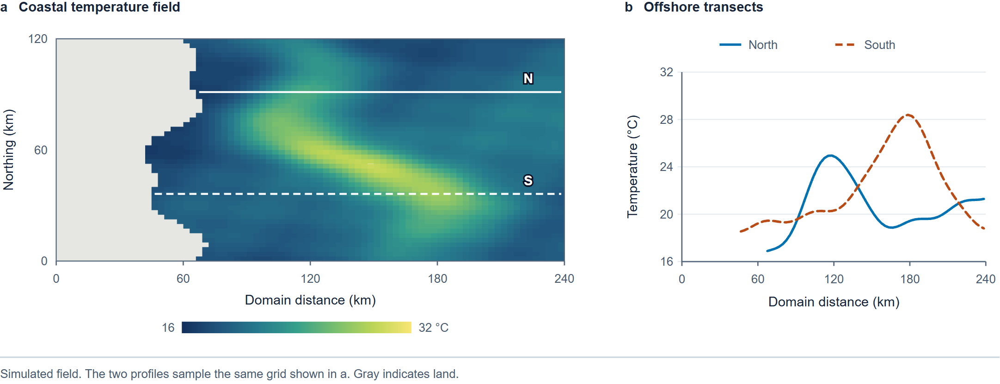
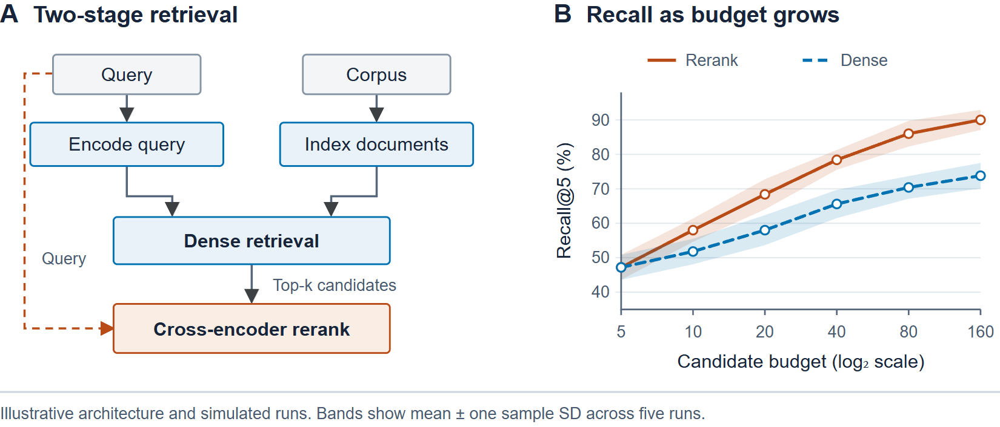
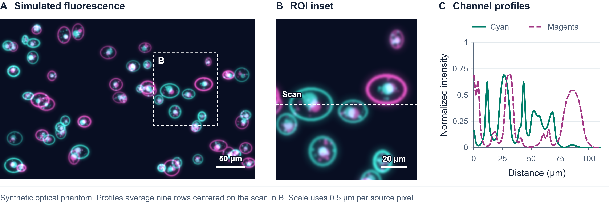

ACADEMIC FIGURE REFINER
Build & refine
academic figures.
Turn sketches, screenshots, and data into figures you can edit.
- BUILD / REBUILD
- Editable HTML + SVG
- CHECK AT PRINT WIDTH
- Automated layout audit
- EXPORT
- Cropped PDF + high-res PNG


